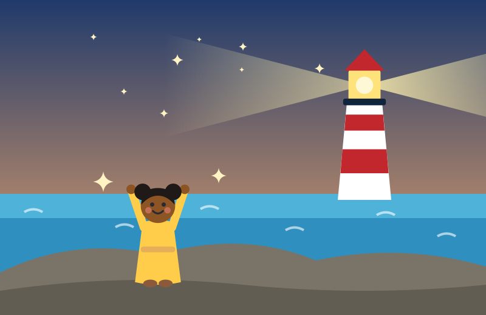
Ama Shines Her Light
A story from Ghana
Little Lights · Picture book
A story from Ghana about a lighthouse, a storm, and a girl who learns that she can shine. Read it together online, or print it as a book.

A story from Ghana
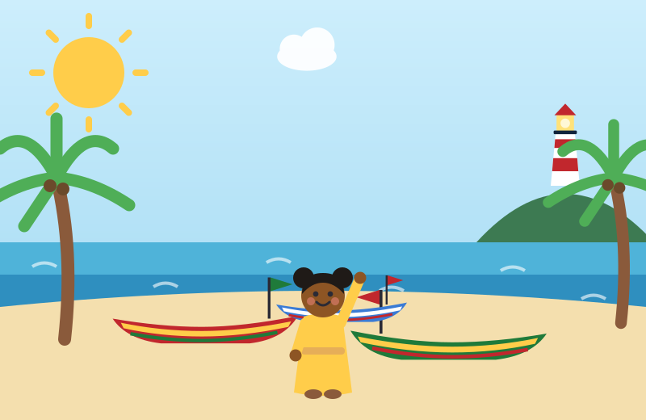
In a fishing town by the sea in Ghana, where the waves go shhh, shhh and the canoes are painted every colour of the rainbow, there lived a girl named Ama.
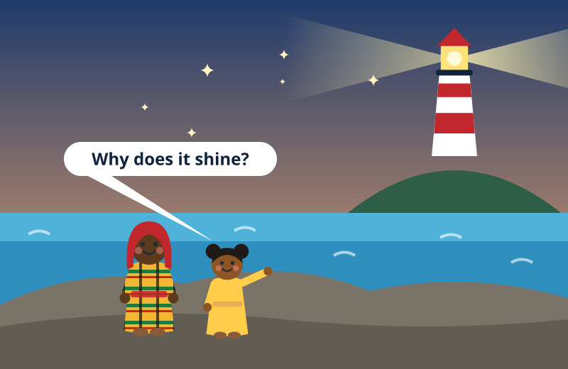
Every evening, Ama sat on the warm rocks with her grandmother, Nana, and watched the lighthouse on the hill. Blink... blink... blink.
"Why does it shine, Nana?" asked Ama.
"So the fishermen can find their way home," said Nana. "When the night is dark, they look for the light."
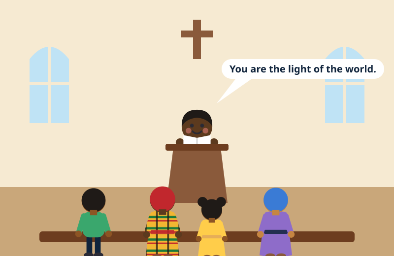
On Sunday, Ama sat next to Nana at church. The pastor opened his Bible and read the words of Jesus: "You are the light of the world."
Ama looked down at her small hands. "Me? A light?" she whispered. "But I'm just Ama."
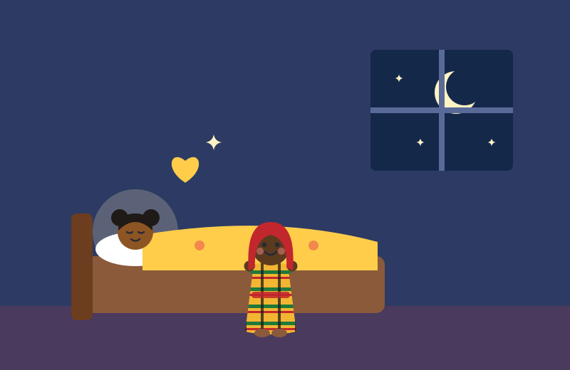
KnowThat night, Nana tucked her into bed. "Jesus said, 'I am the light of the world,'" Nana told her. "When you follow Him, His light shines in you. Even in little girls. Especially in little girls."
So Ama prayed. "Jesus, I want to follow You. Please shine in me."
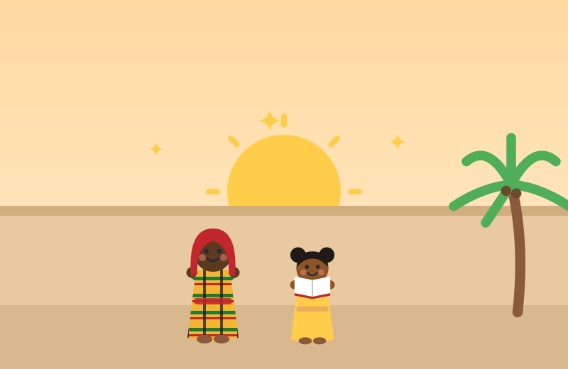
GrowEvery morning after that, Ama read a Bible story with Nana before school. She learned new songs, and she learned to pray about everything, the big things and the small things.
Little by little, like the sun coming up over the sea, Ama's light was growing.
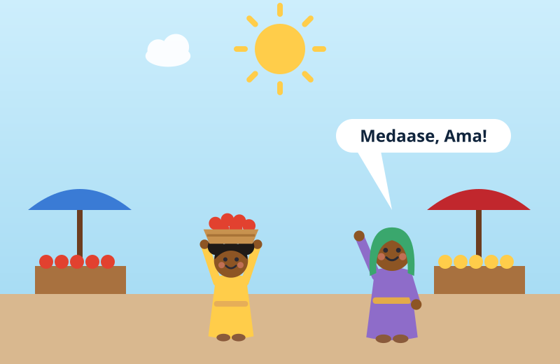
ServeAt the market, Auntie Efua's basket of tomatoes was very heavy. "Let me help!" said Ama, and she carried it on her head all the way home.
Auntie Efua smiled. "Medaase, Ama!" That means thank you.
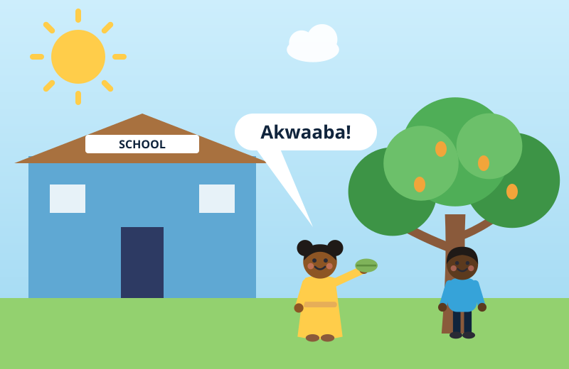
At school there was a new boy named Kwame. At lunchtime he sat all by himself under the mango tree.
Ama sat down beside him and shared her kenkey. "Akwaaba," she said. "Welcome."
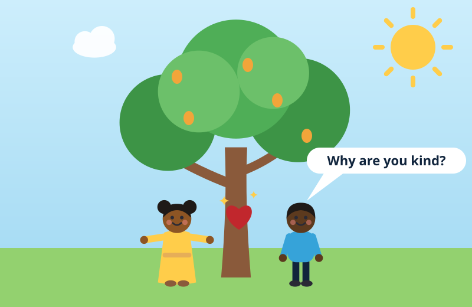
Go"Why are you kind to me?" asked Kwame.
Ama thought for a moment. "Because Jesus loves me," she said. "And He loves you, too. He's like a lighthouse. He helps us find our way home to God."
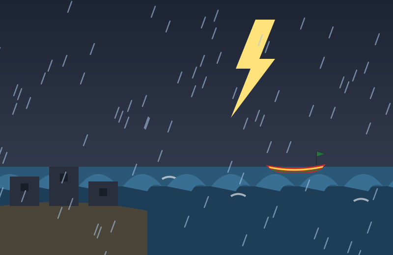
One evening, a big storm blew in from the sea. The wind howled. The rain poured. And all the lights in the town went out!
Out on the dark water, Kwame's father was still in his canoe.
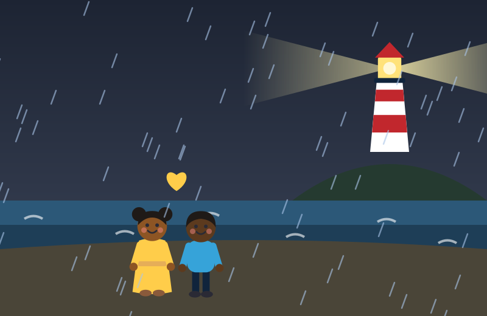
Ama and Kwame held hands and prayed. "Please, God, bring Papa home safely."
Through the rain, they could just see it on the hill: the lighthouse, still shining. Blink... blink... blink.
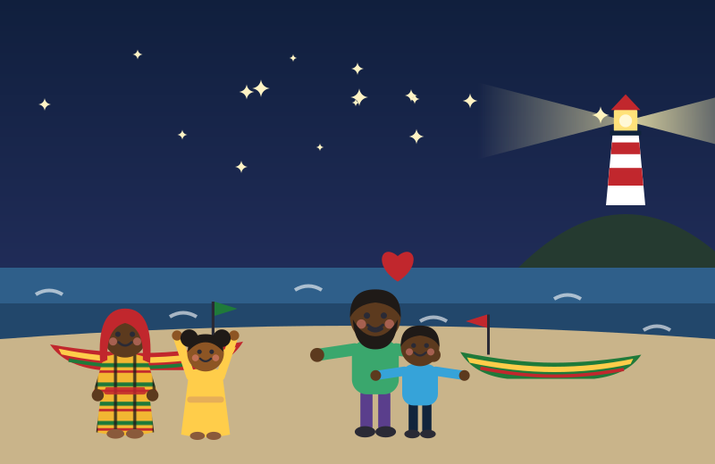
The fishermen followed the light, and one by one, the canoes came safely home. Kwame ran to hug his father.
"The lighthouse doesn't shine for itself," said Ama softly. "It shines so that others can find their way home."
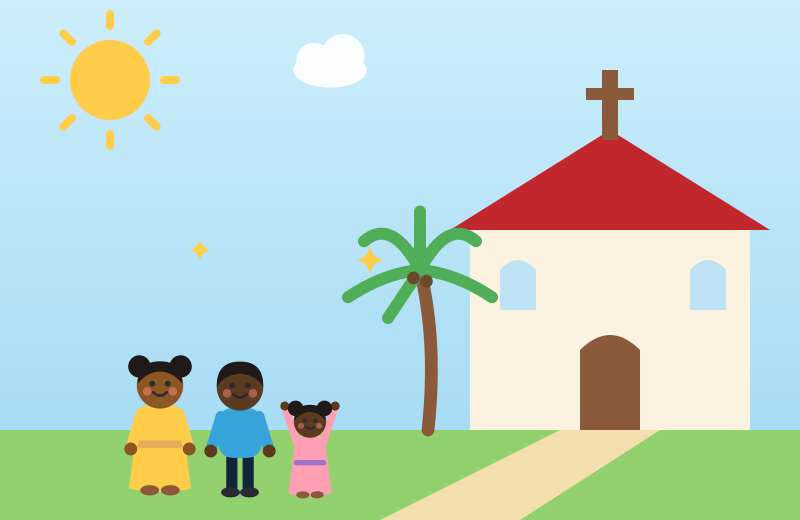
MultiplyThe next Sunday, Kwame came to church with Ama. And the Sunday after that, Kwame brought his little sister, Esi.
One little light became two. Two became three. And the light kept on spreading.
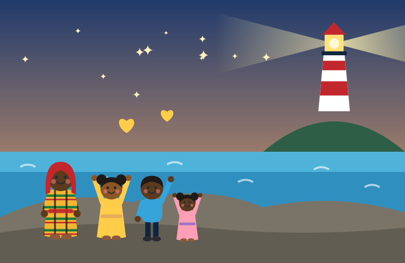
Now, every evening, three children sit on the warm rocks with Nana and watch the lighthouse shine.
And Ama knows that she can shine, too.
How about you, little light? Who will you shine for?
“You are the light of the world.”
“I am the light of the world. He who follows me will not walk in the darkness, but will have the light of life.”
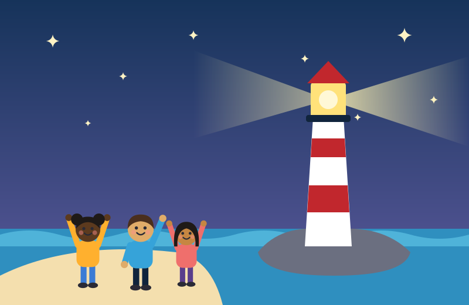
More for little lightsBible devotions with pictures, verses, and prayersWatch for the little badges. Ama comes to know Jesus, grows in Him, serves her neighbours, goes to a friend, and her light multiplies: the Karis Framework at a child's size.
Turn pages with the buttons, the arrow keys, or a swipe on a phone or tablet. Read this page uses your device's own voice, so children who are not yet reading can follow along.
Print it for your Sunday school, your family, or a church in Ghana. Please share it freely and do not sell it. The story and pictures belong to Karis Missions International.